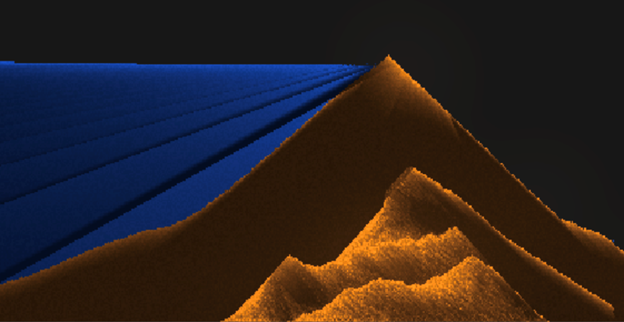
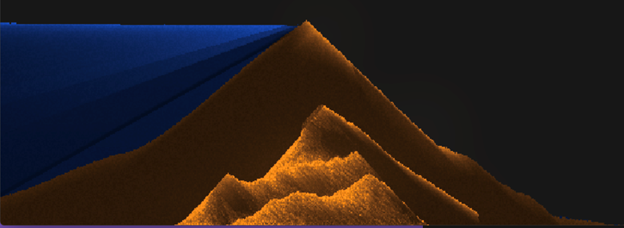

|
Tyler Bohan, Matt Bronars, Andrew Yeh, Prabhman Dhaliwal
Our objective for our project Particles All the Way Down was to be able to make abstract 2D scenes with custom particles that we add to a codebase with interactive parameters such as material modeling, light, and particle interaction. This gave us the most room for creativity and to demonstrate some topics we learned in this class, such as simulating simplified particle systems, ray tracing and RT acceleration, and rendering pipeline techniques. We were influenced by Noita, a game where there is an array of particles, each of which acts differently with each other and the environment. We were also influenced heavily by the blackhole simulator and wanted to find a way to merge the two ideas. Our code starting point was a hefty particle simulating codebase made by MrFrenik with many particles already implemented, giving us an excellent starting spot. We then proceeded to implement lighting effects. We included: one bounce illumination, a mobile light source, multiple light sources, a 3-d lighting effect, and variable transparency depending on the type of particle. We then set to create a special types of particles. We created a magnetic particle that attracted other particles in the vicinity to it. Our last and ambition plan was to create a black hole particle with all the attributes of a black hole. We found this especially difficult to do, especially in a 2 dimensional space, and were not quite able to complete it.
The boilerplate code for this project was given via a project by MrFrenik, aka Josh Jackson, under the “recreating Noita’s Sand Simulation” project on youtube. The github will be linked at the bottom. This codebase is based on MrFrenik’s game development framework, called Gunslinger. Since this is a framework, it just abstracts away features that we would normally have to request from the OS, so it isn’t anything like Unity or Unreal that does all the graphics processing for us. The most useful thing it gave us was the ability to do vector math on the GPU and had useful pre-defined shaders that did a lot of the color calculations and interpolations for us, so we wouldn’t have to recalculate them. This code base gave us primitive particles, such as sand and water and many others, and gave us the tools we needed to build new particles and add dynamic lighting. The technicalities involving the complex particles was based on some simple vector math and what we wanted the particles to do. We intended on also adding a Conway’s Game of Life sim, but this proved too challenging and integrating that with the particles would have felt like another project entirely. The technical approach for the two objectives completed in this project (addition of 2 new complex particles, and dynamic lighting on the 2D particles) are described below.
This aspect was the simpler of the two, mainly because the simulation did not need to be completely realistic. We created a magnet particle which would calculate the velocity of the particle with respect to a magnet positioned somewhere on the gridspace. This velocity was directioned such that it pulled all particles (stationary or in motion) towards it. Once it touched the magnet, the particle disappeared. This was just a matter of swapping information in the buffer for the particles and the textures.
The second particle, which was much more difficult to implement, was the black hole particle. This particle was based on a simple formula to help rotate the particles around the black hole object by giving each particle a centripetal force towards the center of the black hole, and a velocity vector perpendicular to that force. As the object near closer and closer to the center as they get faster and faster, the screen became unstable due to how much motion and interaction had to be calculated on the screen. Some of these calculations (which can be seen in update_blackhole() and update_sand/water/etc in the code) were parallelized on the GPU thanks to the boilerplate code using Gunslinger, but not all of it was. There was no way for us to fix this without rebuilding a lot of the pre-existing codebase, so we just left it as is, because the desired affect occurred, it just couldn’t be easily optimized well enough. Lastly, and the most persistent issue with the black hole particle, was that because of the interaction with some particles with themselves (for example how sand pushes other sand particles out of the way when they are on the same grid space), the particles stick to the sides of the scene. If the simulation is ran for a long time, all the particles eventually converge to the center of the black hole and disappear, however this behavior is very slow and was based on a factor not dependent on the perpendicular velocity to the centripetal force. This was an issue we could not fix in time.
Some lessons learned for this situation: we feel that doing something like Kenny’s project from the previous year might have been better (and less sophisticated) than the approach we did. We really wanted to emulate some of what Noita did and have a cool sandbox-style 2D particle simulator. And while we did have some incredible starting code to get us started and created some meaningful effects in our project time frame, the overall range of what we could have accomplished with this code (without just completely rewriting everything from scratch), is not as high as it could have been with a more focused project. All in all, this project was enjoyable and well conceptualized, and we feel like there is much potential to explore this sandbox style project to do more interesting graphics renders.
For this project we implemented 2D ray tracing support for point light sources. These light sources included a main light source that you can control with your keyboard as well as minor light sources in the form of fire pixels. The code for this part was based largely on the principles of importance sampling that we implemented in project three. Basically, while working in a 2D pixel grid we wanted to model pixels either being directly in light or shaded by other objects. Because there is no camera to speak of in this 2D world, direct illumination could be modeled without the need for a BRDF. Instead, we handled the material differences between various particles by simply changing their transparency. As we were working out bugs in the code, we came across an interesting way to simulate the appearance of depth and included it as a togglable effect. Finally, we ran into issues of aliasing when moving our light source near the edge of an object, but implemented some blurring to limit these artifacts. Now that we have touched on all of the lighting effects present in this project, we will go into more detail about how each of them was implemented.
To get the main light source to work, we emulated what was done in project three. We started off by adding a global variable that kept track of a point light at (X, Y), the location of which can be changed using the arrow keys. Then, for each point in the grid, we traced a line back to the light source and tallied up the number of intersections with non-empty pixels. If there were no intersections, then that pixel displays the particle’s true color. If there were intersections then we model darkness by displaying the true color divided by a factor proportional to the number of intersections. The reason that we don’t just have binary shadow or light like we do for project three is because in a 2D grid, it is not a very good visual if only the outer pixel layer of an object is illuminated. Having an element of light penetration lets us better see the objects in the world, and additionally we can represent materials by changing how much light penetrates different particles. When tracing the light path, we counted intersections with sand, stone, oil and other opaque materials as full intersections. But when we intersected water, steam, smoke and other somewhat translucent particles we only added in fractions of an intersection to the running total. Deciding how much of an intersection to count for each particle type was simply an aesthetic choice.
One of the biggest challenges for this implementation of ray tracing was figuring out how to create a straight line in a pixelated world space. In project three we could resort to the basic equations of a line in order to determine intersections, but here we had to come up with some heuristic for checking an appropriate number of grid cells. The approach is tedious and confusing to explain in text, but it is clearly shown in the graphic below.
|
|
After getting this base lighting figure out, we then looked at how we could add in fire particles as their own light sources. The initial thought was to trace rays to every fire particle to see how much illumination we have at a certain spot. However, there are so many fire particles generated at a time that tracing rays to every one of them would be very slow. So instead we added each fire particle to an array of minor light sources, uniformly sampled 1 / 800 of them, and just checked illumination from those. We calculated the intersections along the ray’s path in the same way that we did for the main light source, but we limited the maximum possible illumination and also added in a distance factor that reduced the illuminance the further the particle is from the fire.
We also noticed that if we locked in the displayed color of the pixels once they stopped moving, we could get an interesting depth effect. By not being put in shade by particles added on top, it appears as though they are in the foreground. This was done by allocating space in the heap for a new texture buffer and saving the values when R is pressed. After this, the program will only update the running texture buffer for pixels that were empty in the saved buffer. Only limitation is that the foreground pixels will not be affected if we move the light source to the other side of the screen, which makes the effect look a little less realistic.
Finally, we noticed some errors that occurred when we moved the light source close to the edge of an object in the scene. Specifically, we saw alternating bands of light and dark in areas that should have been completely shaded. This was similar to jaggies, and certainly the effect of aliasing. Basically, the way we are calculating our pseudo-line causes us to sometimes miss the object in the way and sometimes hit it. Ideally, we would have a smaller pixel grid so that we could get a more accurate line or implement super sampling, but our grid size was fixed. So instead, we added some blurring mechanisms to reduce this aliasing effect. The first thing we did was increase the width of our pseudo-line. The other measure we took was as we traced the ray, we took the average intersection of surrounding pixels to calculate the intersection at a point. With all of this we were not able to completely get rid of the aliasing, but we were able to see much improved results.

|

|
|

|
|

|
- Rishi (particle sim guidance) and Kenny (black hole visualization guidance, still WIP)
- Professor Ren guidance on light sim and how it interacts with simple gravitational constructs
- John (MrFrenik), the dude who made this video and wrote a large swath of this glorious particle codebase. Also wrote the gunslinger framework that made it easier to apply a lot of this stuff. Also helped us out by directly communicating with us:
link- The people at Nolla games who made Noita that inspired this project :) --even though they didnt respond to our emails :(
- Github of boilerplate code: https://github.com/GameEngineering/EP01_SandSim
- Our github: https://github.com/bohanarrow/CS184_final_deliverable/tree/Lighting
- The tech and design of Noita by its developers: Exploring the Tech and Design of Noita
- Interactive pixels: https://tympanus.net/codrops/2019/01/17/interactive-particles-with-three-js/
- 2d black hole visualization: https://thecodingtrain.com/CodingChallenges/144-black-hole-visualization.html
- Gunsligner api: https://github.com/MrFrenik/gunslinger/blob/master/gs.h#L2476
Matthew: Developed the code to add all aspects of the 2D lighting to particle sim. Also, developed an ingenius hueristic to resemeble ray tracing within a pixel space.
Tyler: Helped debug issues with the lighting, made all the websites for each step of the process.
Prabham: Conceptualized project and contacted MrFrenik for assistance; worked on adding magnet and black hole particles to codebase.
Andrew: Worked on adding black hole particle to codebase.